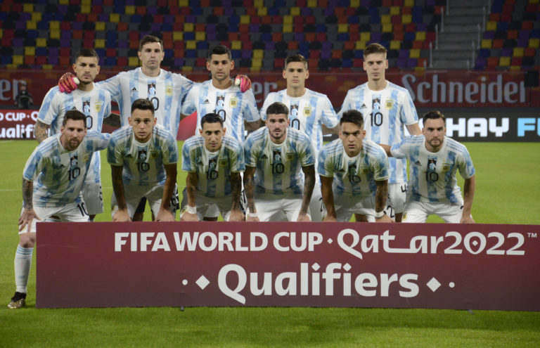

A Argentina possui 17 participações em Copas do Mundo (contando até a Copa de 2018), não tendo participado apenas de quatro Copas. Em 1938, desistiu de competir por não concordar que a Copa daquele ano fosse novamente na Europa, como já havia sido em 1934. Em 1950 e 1954, ficou de fora do mundial devido a questões políticas da AFA (não houve Copa em 1942 e 1946 devido à Segunda Guerra Mundial). E em 1970, a Seleção Argentina não passou nas Eliminatórias.
A Argentina é uma das grandes seleções de futebol do mundo, tendo conquistado 2 Copas do Mundo - em 1978 e em 1986 - Quinze títulos da Copa América, uma Copa das Confederações e duas medalhas de ouro em Jogos Olímpicos, em Atenas-2004 e em Pequim-2008.
| Data/Hora | Estádio | Adversário |
|---|---|---|
| 22 nov 2022 / 07h00 | Estádio Nacional de Lusail | Arábia Saudita |
| 26 nov 2022 / 16h00 | Estádio Nacional de Lusail | México |
| 30 nov 2022 / 16h00 | Estádio 974(Estádio Ras Abu Aboud) | Polônia |